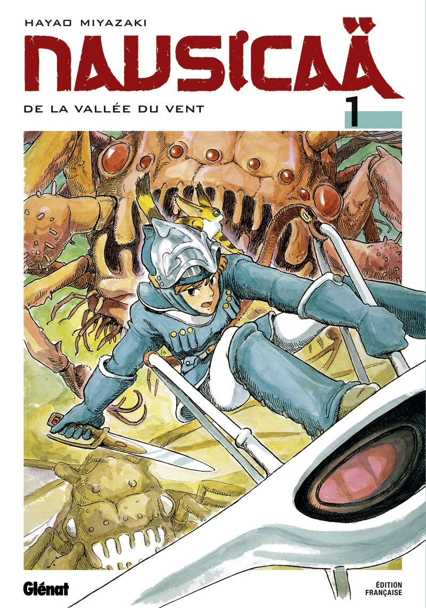
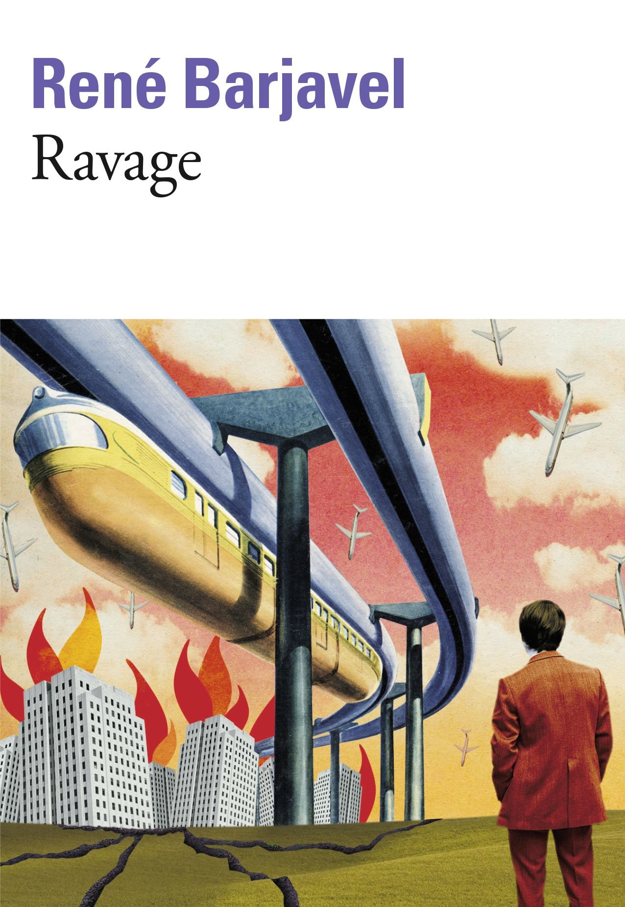

Pierre Tissot
C'est beau, un code qui marche ...
Tu fais tes trucs, et puis d'un coup, Cash-pistache ! Ça marche ! Terrible ...
Coucou !
Tu fais tes trucs, et puis d'un coup, Cash-pistache ! Ça marche ! Terrible ...
|  |
Nausicaä de la vallée du ventGrande fresque d'heroic fantasy, à situer entre "Dune" et l'oeuvre de Tolkien, Nausicaä est la première et seule véritable bande dessinée de Miyazaki (Mon Voisin Totoro, Porco Rosso, Princesse Mononoké). Un chef-d'oeuvre ! (Série complète en 7 volumes) |
|  |
RavageRavage présente le naufrage d'une société mature, dans laquelle, un jour, l'électricité disparaît et plus aucune machine ne peut fonctionner. Les habitants, anéantis par la soudaineté de la catastrophe, sombrent dans le chaos, privés d'eau courante, de lumière et de moyens de déplacement. Il s'agit d'un thème typique de la science-fiction post-apocalyptique, brossant le portrait de la fin de l'humanité technologique et la reconstruction d'une civilisation sur d'autres bases. |